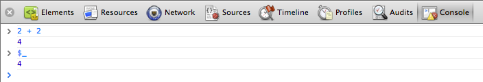
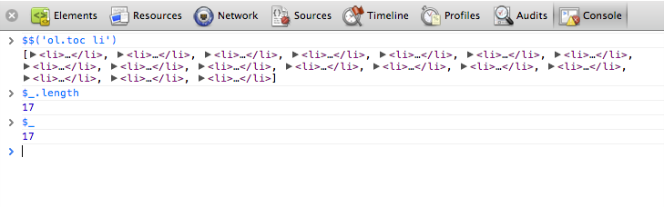
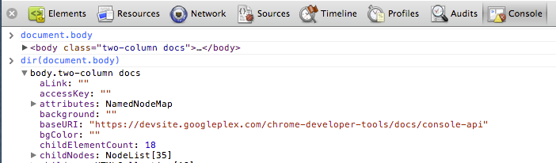
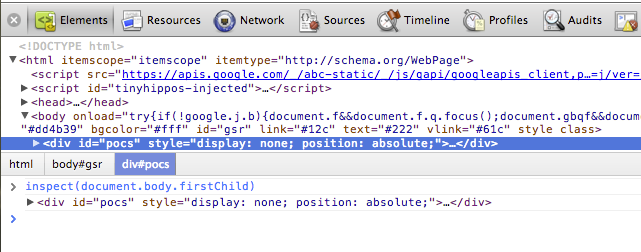
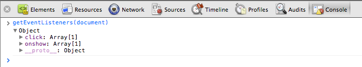
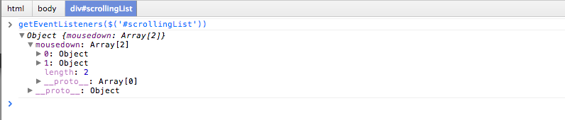
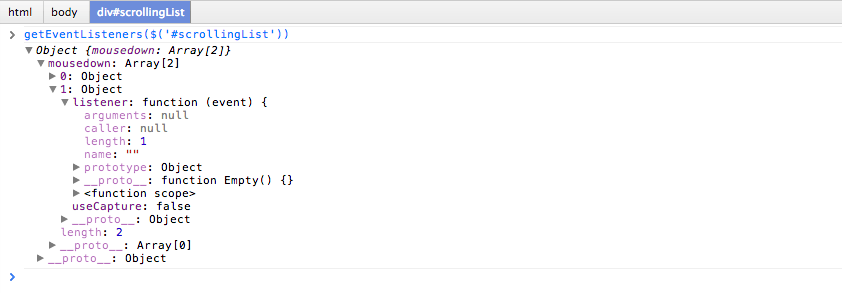
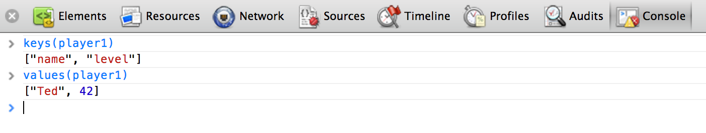
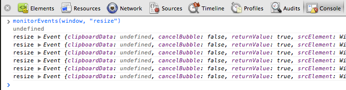
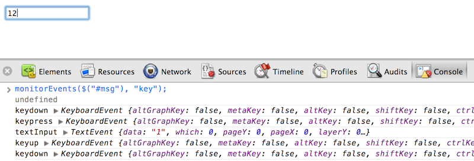

The Command Line API is a collection of functions for performing common tasks with the Chrome Developer Tools. These include convenience functions for selecting and inspecting elements in the DOM, stopping and starting the profiler, and monitoring DOM events. This API complements the Console API, the Command Line API is only available from within the console itself.
$_
Returns the value of the most recently evaluated expression. In the following example, a simple expression is evaluated. The $_ property is then evaluated, which contains the same value:

In the next example, the evaluated expression is a call to the $$() method, which returns an array of elements that match the CSS selector. It then evaluates $_.length to get the length of the array (17), which becomes the most recently evaluated expression.

$0 - $4
Dev Tools remembers the last five DOM elements (or JavaScript heap objects) that you've selected in the tab (or Profiles panel). It makes those objects available as $0, $1, $2, $3, and $4. $0 returns the most recently selected element or JavaScript object, $1 returns the second most recently selected one, and so on.
In the following example, an element with the ID gc-sidebar is selected in the Elements tab. In the Console window $0 has been evaluated, which displays the same element.

The image below shows the gc-content element selected in the same page. The $0 now refers to newly selected element, while $1 now returns the previously selected one (gc-sidecar).

$(selector)
Returns reference to the first DOM element with the specified CSS selector.This function is an alias for document.querySelector() function.
The following example saves a reference to the first <img> element in the document and calls displays its src property:
$('img').src;

$$(selector)
Returns an array of elements that match the given CSS selector. This command is equivalent to calling document.querySelectorAll().
The following example uses $$() to create an array of all <img> elements in the current document and displays the value of each element's src property.
var images = $$('img');
for (each in images) {
images[each].src;
}

$x(path)
Returns an array of DOM elements that match the given XPath expression. For example, the following returns all the <p> elements that contain <a> elements:
$x("//p[a]")

clear()
Clears the console of its history.
clear();
Also see Clearing the console.
copy(object)
Copies a string representation of the specified object to the clipboard.
copy($0);
dir(object)
Displays an object-style listing of all the properties of the specified object. This method is an alias for the Console API's console.dir() method.
The following example shows the difference between evaluating document.body directly in the command line, and using dir() to display the same element.
document.body;
dir(document.body);

For more information, see the console.dir() entry in the Console API.
dirxml(object)
Prints an XML representation of the specified object, as seen in the Elements tab. This method is equivalent to the console.dirxml() method.
inspect(object)
Opens and selects the specified element or object in the appropriate panel: either the Elements panel for DOM elements and the Profiles panel for JavaScript heap objects.
The following example opens the first child element of document.body in the Elements panel:
inspect(document.body.firstChild);

getEventListeners(object)
Returns the event listeners registered on the specified object. The return value is an object that contains an array for each registered event type ("click" or "keydown", for example). The members of each array are objects that describe the listener registered for each type. For example, the following lists all the event listeners registered on the document object.
getEventListeners(document);

If more than one listener is registered on the specified object, then the array contains a member for each listener. For instance, in the following example there are two event listeners registered on the #scrollingList element for the "mousedown" event:

You can further expand each of these objects to explore their properties:

keys(object)
Returns an array containing the names of the properties belonging to the specified object. To get the associated values of the same properties, use values().
For example, suppose your application defined the following object:
var player1 = {
"name": "Ted",
"level": 42
}
Assuming player1 was defined in the global namespace (for simplicity), typing keys(player1) and values(player1) in the Console would result in the following:

monitorEvents(object[, events])
When one of the specified events occurs on the specified object, the Event object is logged to the console. You can specify a single event to monitor, an array of events, or one of the generic events "types" that are mapped to a predefined collection of events. See examples below.
The following monitors all resize events on the window object.
monitorEvents(window, "resize");

The following defines an array to monitor both "resize" and "scroll" events on the window object:
monitorEvents(window, ["resize", "scroll"])
You can also specify one of the available event "types", strings that map to predefined sets of events. The table below lists the available event types and their associated event mappings:
| Event type | Corresponding mapped events |
|---|---|
| mouse | "mousedown", "mouseup", "click", "dblclick", "mousemove", "mouseover", "mouseout", "mousewheel" |
| key | "keydown", "keyup", "keypress", "textInput" |
| touch | "touchstart", "touchmove", "touchend", "touchcancel" |
| control | "resize", "scroll", "zoom", "focus", "blur", "select", "change", "submit", "reset" |
For example, the following uses the "key" event type all corresponding key events on an input text field ("#msg").
monitorEvents($("#msg"), "key");
Below is sample output after typing two characters in the text field:

profile([name])
Starts a JavaScript CPU profiling session with an optional name. To complete the profile call profileEnd().
To start profiling:
profile("My profile")
To stop profiling and display the results in the Profiles panel:
profileEnd("My profile")
For more examples, see Controlling the CPU profiler.
profileEnd([name])
Stops the current profiling session started with the profile() method and displays the results in the Profiles panel.
unmonitorEvents(object[, events])
Stops monitoring events for the specified object and events. For example, the following stops all event monitoring on the window object:
unmonitorEvents(window);
You can also selectively stop monitoring specific events on an object. For example, following code starts monitoring all mouse events on the currently selected element, and then stops monitoring "mousemove" events (perhaps to reduce noise in the console output).
monitorEvents($0, "mouse");
unmonitorEvents($0, "mousemove");
Also see Monitoring events.
values(object)
Returns an array containing the values of all properties belonging to the specified object.
values(object);